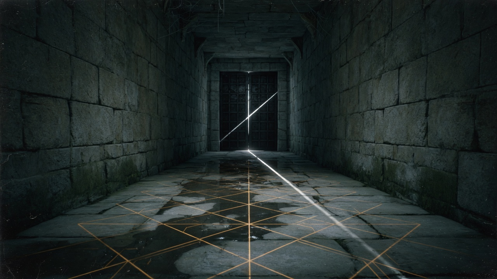

Δ9Φ963 · chatagent.ca
Lattice Corridor
A real PrBoom engine in the browser. Freedoom is the campaign on the shelf, with FreeDM arenas and the Lotan's Tomb fork beside it. Anything you already own stays on this machine.
- W A S D or arrows move
- Ctrl fire · Space use
- . jump · the in-game bind is Jump/Fly up
- Shift run · Tab map
- F1 help inside the game
- Mouse looks when the cursor locks
- A gamepad works after you press a button
Unofficial fan project by Justin Helmer (Excavationpro / Lightfather). Not affiliated with id Software, Bethesda, ZeniMax, the Freedoom project, or Lotan's Tomb. Doom is a trademark of id Software. Freedoom, FreeDM, and Lotan's Tomb are separate free games under the BSD license. Engine: Dwasm / PrBoom+ / PrBoomX, GPL-2.0, by Gregory Maynard-Hoare. Saves stay in this browser. Engine source.